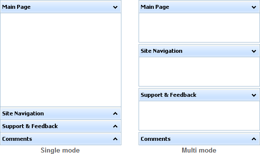

Modes
Since 2.5 dhtmlxAccordion version, 2 modes are available:
- Single Mode (the default one);
- Multi Mode.

Single Mode refers to accordion's behaviour when only one item can be opened. For this mode the end-user click operations on Accordion items are the following:
- A click on a collapsed item - expands this item, and collapses the one that was expanded before;
- A click on an expanded item - yields no result.
Multi Mode refers to accordion's behaviour when all items could be opened at the moment. For this mode the end-user clicks on Accordion items are the following:
- A click on a collapsed item - expands this item;
- A click on an expanded item - collapses this item.
The single mode is activated by default.
To enable the multi mode you should call method enableMultiMode() with the true parameter.
var dhxAcc = new dhtmlXAccordion("box"); //at first, you enable the mode dhxAcc.enableMultiMode(true); //and only then, add items dhxAccord.addItem("a1", "Main Page"); dhxAccord.addItem("a2", "Site Navigation");
Related sample: Multi Mode